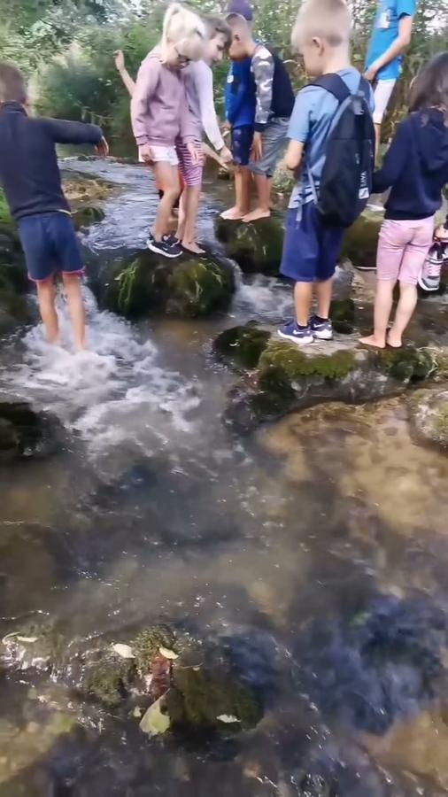

Brez spanja · 5–14 let
Počitniško doživetje
Vsak dan od 7.00 do 17.00, z zajtrkom in kosilom. Otroka lahko pripeljete tudi kasneje ali ga prevzamete prej. Manjše število otrok za še več pristne interakcije in vsak termin z drugačnim doživetjem presenečenja.
- Lov za kristali in družabne igre s kristali
- Raziskovanje gozda, potoka in narave
- Streljanje z loki, športne igre, napihljivi tobogan
- Ustvarjanje, kristalna peščena mesta, pravljice navdiha
- Negovanje z glasbo in meditacija za otroke
Poleti 2025 se je Počitniškega doživetja v petih tednih udeležilo več kot 77 otrok.
Termini in cena za poletje 2027: dodamo